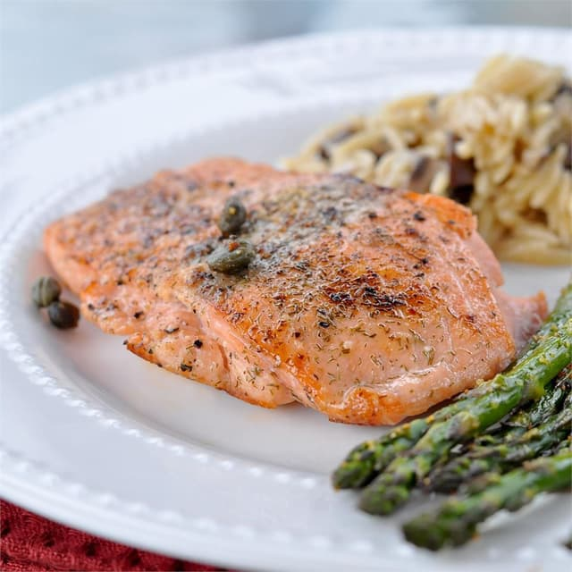

Pan Seared Salmon

A recipe for pan seared salmon from allrecipes.com
This recipes will teach you how to make a delicious pan seared salmon
Ingredients
- 4 (6 ounce) fillets salmon
- 2 tablespoons olive oil
- 2 tablespoons capers
- ⅛ teaspoon salt
- ⅛ teaspoon ground black pepper
- 4 slices lemon
Steps
- Preheat a large heavy skillet over medium heat for 3 minutes.
- Coat salmon fillets with olive oil; place skin-side down in the preheated skillet and
increase heat to high. Sprinkle with capers, salt, and pepper;cook for 3 minutes on
one side. Turn salmon fillets over; continue to cook until salmon flakes easily with a
fork, about 5 minutes.
- Transfer salmon to individual plates and garnish with lemon slices.